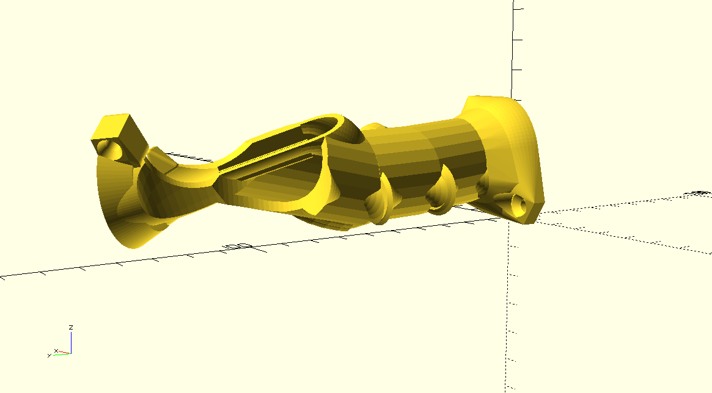
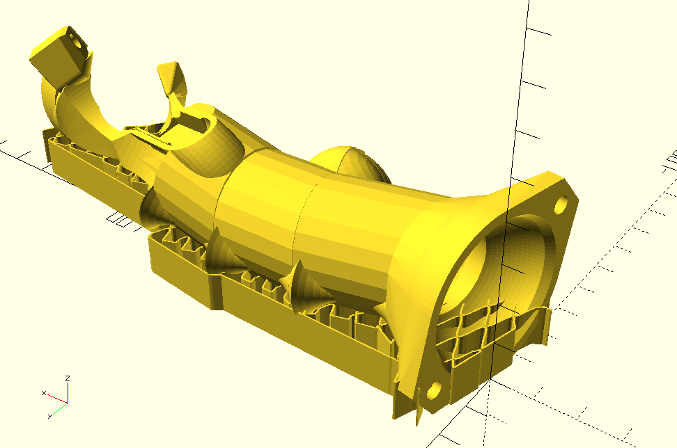
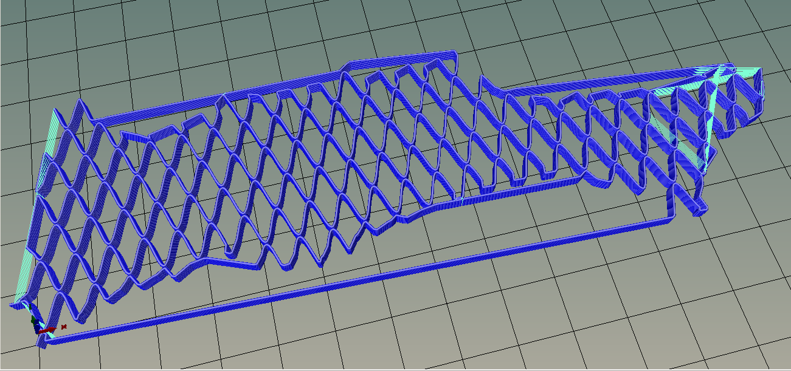
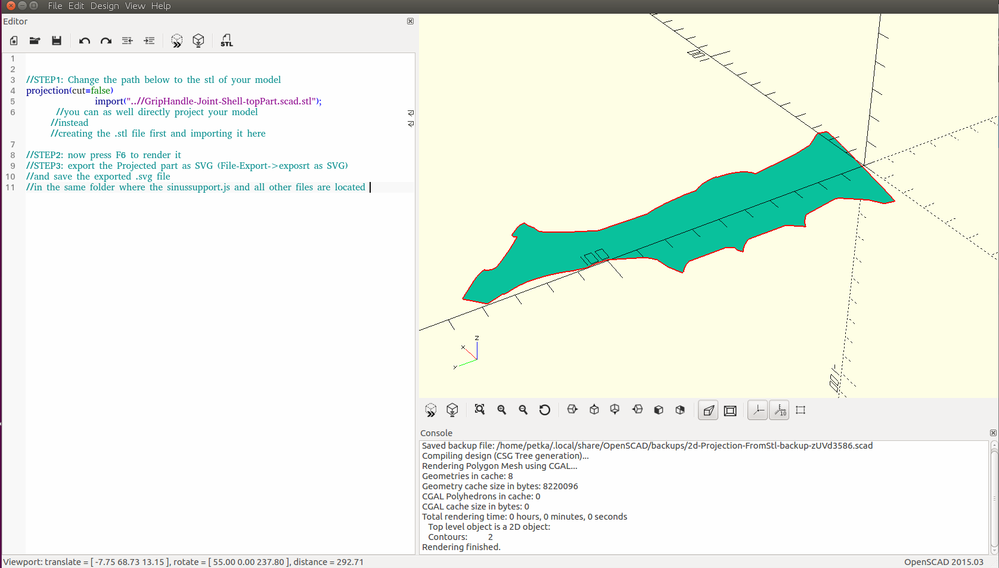
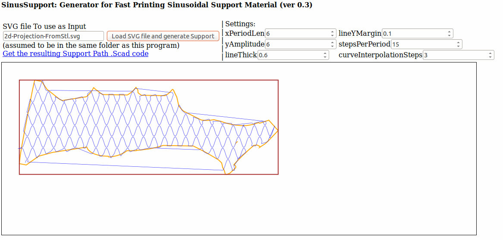
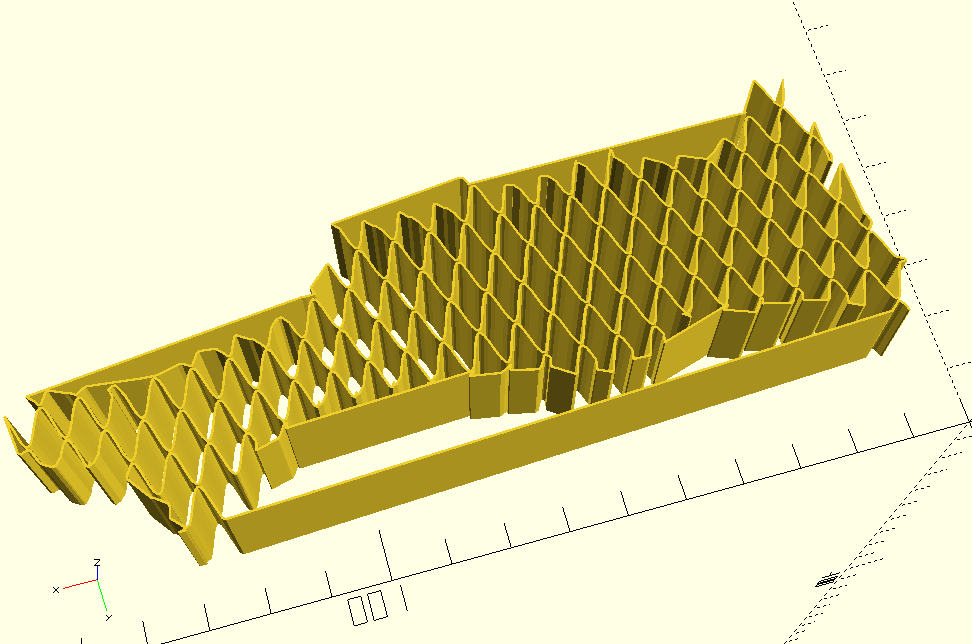
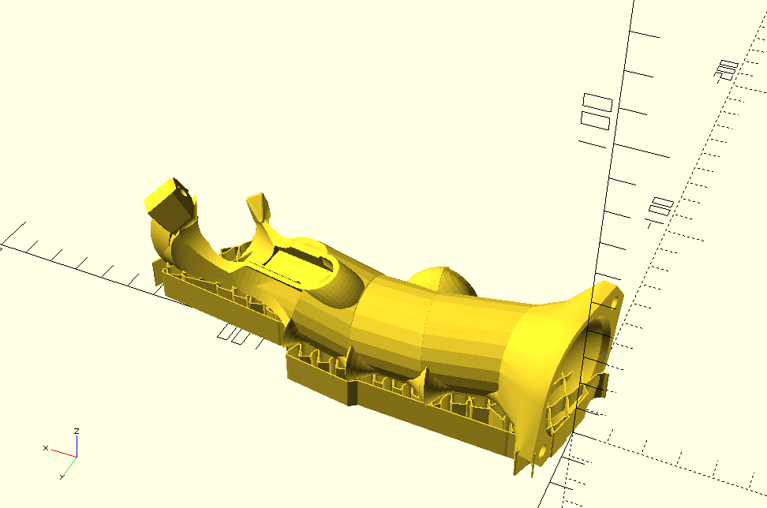

------ERROR LOADING SCRIPT FILE FOR THE PROGRAM!------
------unable to load file: sinussupport.js
If you see this message that means the script file sinussupport.js, which is referenced and used by this page, was not properly loaded by your browser. Every time you open this sinussupport.html file your browser will also automatically try to load sinussupport.js in the background. But because you see this, you know your browser could not find or load the .js file. Make sure sinussupport.js is located in your current working directory (the same folder in which you have opened this sinussupport.html file).
INSTALLATION: download the full .zip file from github and extract it into a local folder, change to this new folder and open sinussupport.html from there.
SinusSupport: Generates very fast printable support material with very few travel moves and deccelerations. VER: 0.4
WHAT DOES THIS PROGRAM DO?
The USE (INSTRUCTIONS below) is to generate very fast printable support material with very few travel moves and deccelerations
|
| from this: |
to this: |
having very few sharp corners(no deccelerations) and few travel moves like this: |

|

|

|
-
(INSTALLATION: download the full .zip file from github and extract it into a local folder, change to this new folder and from there open the sinussupport.html in a webbrowser).
- step 1:create a 2D projection of your models .stl using openscad:
open 2d-Projection-FromStl.scad in scad and followthe instructions inside to create a 2d Projection of your model and save it as SVG

-
step 2: In the Webbrowser (sinussupport.html) in the controls at the TOP-LEFT enter the name of the SVG you have just created in openscad
-
step 3: Click on Load SVG File and then on the "Get resulting Support Path scad code" which will appear if there were no errors

- step 4: save the resulting file under the suggested name "supportPathData.scad" in the same folder with the other files of this program.
-
step 5: open sinusSupport.scad in openscad and render it. here comes your support Material.

- step 6: edit the sinusSupport.scad or "include" it to UNION it with you original Model. (you could also subtract the hull of your Model from the support Material if you only need the support on bottom of the model, and not in its holes)

- Congratulations! You have an inbuilt fast printable sinusoidal Support